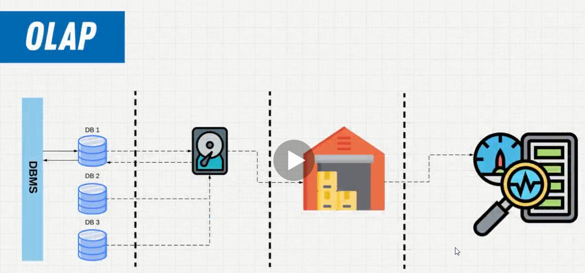

Query
-->query in english is question, so queries are the way that we are going to put together our questions to which we want an answer from the database, query is also know as SQL Statement
ex: SELECT * FROM USERS;
------------------------------------------------------------Query Breakdown

-->SQL is a declartive language
---------------------------------------------------------
Declarative vs Imperative
Declarative-->What will happen?
Imperative-->How it will happen?


-->python can be declarative or imperative
-->Java imperative
---------------------------------------------------------
History of SQL
-->used to name as SEQUEL-->structured english query language
---------------------------------------------------------
SQL Standards
Why companies follow SQL Standards??
-->Because they want all people in the industry to use their software, their databases, they add slight things just to make product slightly different

----------------------------------------------------------
What is a database??
-->it's a structured set of data that is structured in a certain way to scale with organizations that have massive quantities of data
-->Databases are our modern day interpretation of how to organize data but before databases were around, we had something called file processing systems

-->This is the precursor to the modern database, you were saving data on individual files and there was no correlation between the files, you basically were creating systems to save particular types of data
ex: let's say you had a real estate firm in one part of the system, in first part or file you would keep all listings of real estate, second file you keep customers and third file you keep sales, but there wasn't really any relationship between the data
-->if customer changed in one file for example the change wouldn't go all the way through to the sales, you basically copying customer information into the sales
-->so file processing systems had a lot of benefits, but a lot of negatives because you were building custom software in specific coding languages like java that would manage your data, you were doing it all, all the programmers, the coders, the developers, whatever you want to call them, they were building their own systems and that's what we call file processing systems

-->for user he would be talking to the computer and some specific coding language like python which talking directly to the machinery and this was a large disadvantage because you had all of this management to do in python for example, you even needed to know how your data was being stored, what hard drives you were using, what software was running on the server, whether it be Mac, windows or linux, you need to know all of that in order to write the software
-->There was no common model
What is the model??
-->model is just a way of saying, hey my data is going to follow cetain structure, and if all of the data followed a similar model, they could talk to each other
----------------------------------------------------------
Database Oriented Approach

-->There is this software that is utilized to manage databases and it's called a database management software, and it's going to enforce a model that each one of these(library-exams-students) needs to follow
-->by enforcing that structure now, no one needs to care about where the data is stored, this isn't important anymore because all of these structures are following the same principles and there is a layer of software in front of whoever's talking to it that is doing this management, that means you don't need software developers anymore to create custom solutions
-->So database approach took all of these fragmented, isolated systems that stored data separately in different ways and unified made them make them one

-->each database management system has their own model ex: relational model
----------------------------------------------------------
Database Models
1-Hierarchical
2-Networking
3-Entity-relationship
4-Relational
5-Object Oriented
6-Flat
7-Semi-Structured
Database Model-->is nothing more than a way to organize and store your data
Relational-->the most popular model
Hierarchical, Networking-->old from 70s, 80s but they important to know how we are now
----------------------------------------------------------
Hierarchical Model
-->it's not efficient model, it decides to store and organize data in a tree like structure, and it has this concept of parent child, every child only can have a single root, there is no ability to say mo and andrei both make same book1 for example
-->there are many things that emulate it, to make this structure look like it would have been stored is XML
XML-->is a document type in which we structured data in a tree like fashion
-->when you delete a parent, all child's information goes away, so the data is what we call tightly coupled-->meaning it's directly related to its parent
-->it's good for describing what we would call a one to many relationship
Networking Model
-->expanded on the hierarchical model, allowing many to many relationships

-->we could now see the child entities could have multiple parents, so it's more complex
----------------------------------------------------------
Relational Model
-->it followed a table structure, organizing your data in tables

-->by storing all our data in a flat way unrelated to parent and child like structure, we can now draw relationships in a much simpler way
----------------------------------------------------------
DBMS Revisited

----------------------------------------------------------
Degree-->is the collection of columns in the table
-->when we talk about what a column can store, we call that the domain or constraint
Attribute = Column = Field
----------------------------------------------------------
Rows = Tuples = Record
Cardinality-->the collection of rows in the table
----------------------------------------------------------
Primary and Foreign Keys
Primary Key-->something that uniquely identifies your row

----------------------------------------------------------
OLTP vs OLAP
OLTP-->(Online Transactional Processing
) is the supporting day to day database, online transactions processing, these are databases that are driving the day to day transactions, they have the users, orders, purchases, all they do is store and categorize this data in that relational model
OLAP-->(Online analytical processing
) when you take transactional processing data and you put it in a data warehouse and then you start doing all types of analytical processing to know what is valuable about that data
